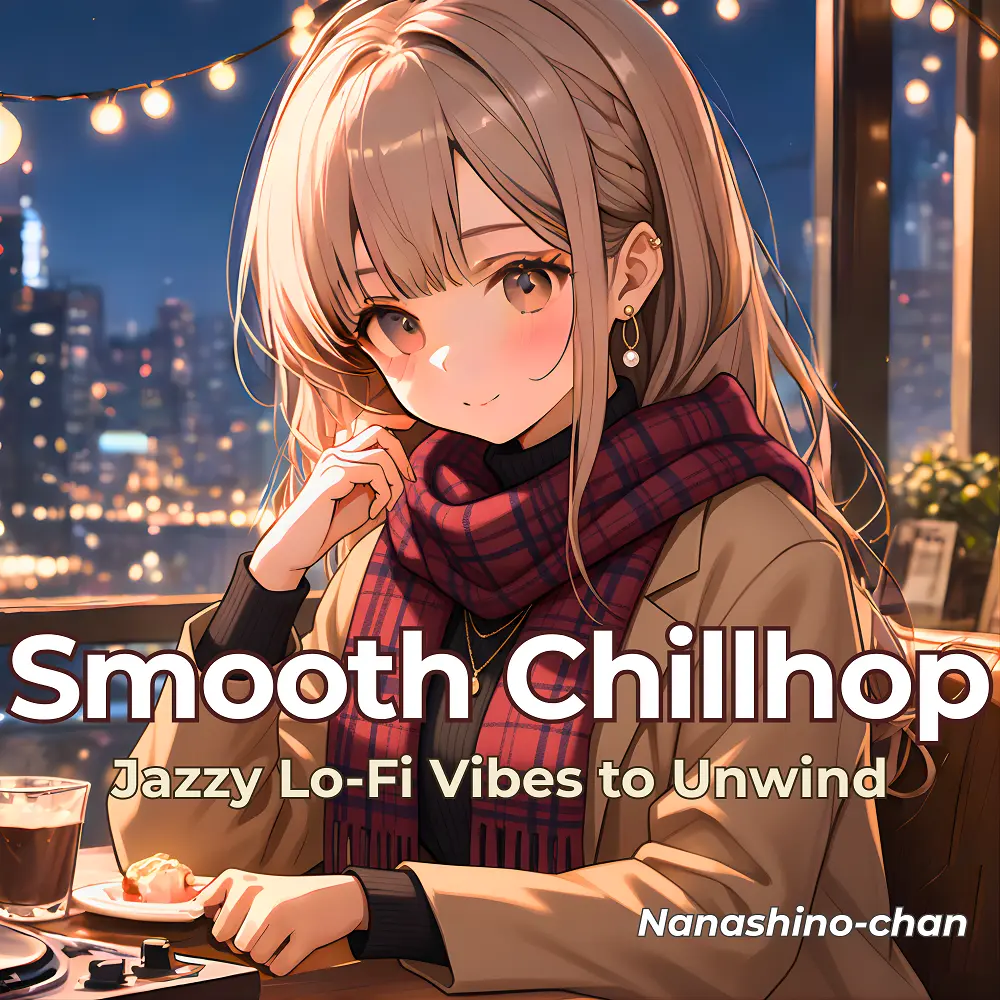

Lo-Fi · Jazz · Chillhop
Midnight Lo-Fi Dreams : Jazzy Lo-Fi Vibes to Unwind
Nanashino-chan
Explore Midnight Lo-Fi Dreams : Jazzy Lo-Fi Vibes to Unwind by Nanashino-chan: 19 instrumental tracks spanning Lo-Fi / Jazz / Chillhop. Start with Evening Chillhop Glow / Velvet Chill Jazz Flow, preview the collection and find your favorites on streaming services.
2025-05-06 · Released · 19 tracks · Instrumental
Preview the album
The jacket stays here until you choose a track. Playback uses YouTube.
YOUTUBE PREVIEW
Choose a track to listen
The jacket stays here until you choose a track. Playback uses YouTube.
If playback is unavailable, open the album or track on the streaming service.
Find this album on streaming services
Links marked “search” open search results. Select the album or track on the service.
Track list 19
- 01Evening Chillhop Glow
- 02Velvet Chill Jazz Flow
- 03Lo-Fi Conversations at Dusk
- 04Coffee Break Chillhop
- 05Soulful Lo-Fi Sketches
- 06Lazy Afternoon Jazzhop
- 07Golden Hour Chill Vibes
- 08Late Night Jazz Swing
- 09Peaceful Chill Mindset
- 10Moonlight Lo-Fi Lounge
- 11Whispers of Smooth Jazz
- 12Blue Hour Melody
- 13Soothing Lo-Fi Echoes
- 14Urban Sunset Chillhop
- 15Quiet Jazz Groove
- 16Calm Reflections in Lo-Fi
- 17Lo-Fi Smooth Jazz Groove
- 18Moonlight Breeze Vibes
- 19Final Light Chillout
Find a sound for your next post
Copy “Nanashino-chan + track title” and paste it into your social app’s music search. Availability depends on your region and account. Copying the name does not grant usage rights.